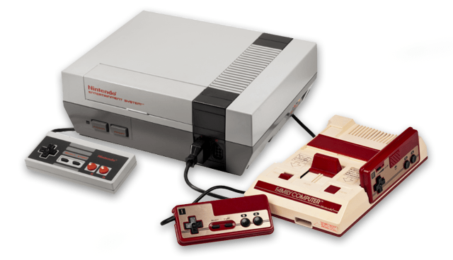
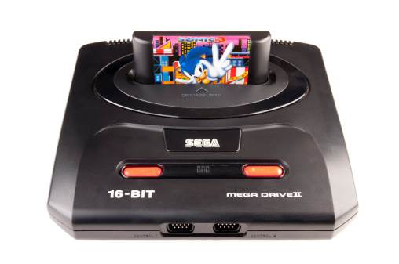
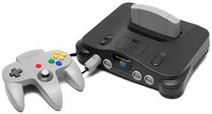

| Magnavoxv Odyssey | Pong | Coleco Telstar |
|---|---|---|
| Clique aqui e saiba mais! |
Clique aqui e saiba mais! |
 Clique aqui e saiba mais! |
Segunda Geração:
Na história dos consoles de videogame, a segunda geração compreende os consoles lançados entre os anos de 1976 e 1984, dentre os quais destacam-se o Atari 2600 , Magnavox Odyssey 2 e o Fairchild Channel F .Essa segunda geração tinha aparelhos com processadores de 4 e 8-bit. Alguns destaques que diferenciavam da geração anterior:
- Lógica de jogo baseada em microprocessador: Isso permitiu uma maior complexidade e variedade nos jogos.
- Inteligência artificial: Para oponentes controlados pelo computador, criando desafios para jogadores solitários.
- Cartuchos eletrônicos: Para armazenar dados de jogos, o que possibilitou a troca de jogos em um mesmo console.
- Múltiplas telas de jogo:Permitiu aos jogadores explorar diferentes áreas.
- Gráficos simples: Eram constituídos de blocos, conhecidos como sprites.
- Som limitado: A maioria dos consoles tinha até três canais de som independentes.
Tristemete, a segunda geração de consoles terminou com o Crash dos videogames de 1983 nos Estados Unidos, um evento que quase destruiu a indústria devido ao excesso de consoles e jogos de má qualidade, além da competição com os computadores pessoais que começavam a se popularizar.
| Atari 2600 | Magnavox Odyssey 2 | Fairchild Channel F |
|---|---|---|
 Clique aqui e saiba mais! |
Clique aqui e saiba mais! |
Clique aqui e saiba mais! |
Terceira Geração:
A terceira geração de videogames, também conhecida como a era dos 8-bits, foi um período crucial na história dos jogos eletrônicos. Vamos explorar alguns detalhes interessantes:
-
Início e Consoles Principais:
- A terceira geração começou em 15 de julho de 1983, no Japão, com o lançamento simultâneo do Family Computer (Famicom), mais tarde conhecido como NES (Nintendo Entertainment System).
- Essa geração marcou o fim do “crash” norte-americano dos videogames e a transição dos gráficos baseados em blocos para uma rolagem contínua de hardware (smooth scrolling) e gráficos baseados em sprites.
-
Características Distintas:
- Controles do tipo D-pad: Introdução do direcional digital (D-pad) nos controles.
- Rolagem contínua por hardware: Permite movimentos multi-direcionais suaves entre telas.
- Gráficos em sprites detalhados: Até 64 ou 100 sprites em tela, com cores e tamanhos variados.
- Resolução de imagem: Até 256×224 ou 320×200 pixels.
- Gráficos coloridos aprimorados: Paleta de até 25 ou 32 cores por tela.
- Áudio mono: Até cinco canais independentes de som programável (PSG).
- Uso de óculos estereoscópicos 3D.
-
Consoles Destacados:
- O NES/Famicom foi o console mais vendido dessa geração, seguido pelo Master System.
- No Japão e nos EUA, o NES dominou, enquanto o Master System era popular na Europa e América do Sul.
A terceira geração encerrou-se com o surgimento dos consoles de 16-bits, que superaram os gráficos e o poder de processamento dos 8-bits.
| Nes/Famicon | Master System |
|---|---|
|  Clique aqui e saiba mais! |
Clique aqui e saiba mais! |
Quarta Geração :
Vamos explorar a história da quarta geração de consoles de videogame, também conhecida como a era dos 16-bits. Essa geração abrangeu os anos de 1987 a 1996 e trouxe avanços significativos em termos de tecnologia e qualidade de jogos. Aqui estão alguns destaques dessa época:
-
Consoles Notáveis:
- Mega Drive (Sega Genesis): Lançado em 1988, o Mega Drive foi um dos consoles mais populares da quarta geração. Ele apresentava gráficos coloridos e uma biblioteca de jogos diversificada.
- Super Nintendo (Super Famicom):Lançado em 1990, o Super Nintendo (ou Super Famicom no Japão) se tornou um ícone da era dos 16-bits. Ele oferecia uma ampla variedade de jogos.
-
Características Marcantes:
- Processadores de 16 bits:Os consoles dessa geração tinham processadores de 16 bits, o que permitia gráficos mais detalhados e jogabilidade mais avançada.
- Controladores com vários botões: Os controladores de jogo agora tinham de 3 a 8 botões, permitindo maior flexibilidade nos comandos.
- Gráficos Aprimorados: Rolagem paralaxe com cenários de várias camadas, sprites maiores e cores mais elaboradas eram características marcantes.
- Áudio Estéreo Avançado: Os consoles tinham áudio estéreo com vários canais independentes e som digital.
- Introdução do CD-ROM: Alguns consoles começaram a usar CD-ROMs, permitindo armazenamento de vídeos em full motion e trilhas sonoras de alta qualidade.
A quarta geração foi sucedida pela quinta geração de consoles, que trouxe ainda mais avanços tecnológicos, como gráficos 3D e mídia óptica.
| Super Nintendo(famicon) | Mega Drive |
|---|---|
 Clique aqui e saiba mais! |
 Clique aqui e saiba mais! |
Quinta Geração :
A quinta geração de consoles é um período marcante na história dos videogames, compreendendo os consoles lançados entre 1993 e 2002. Essa era também é conhecida como a era dos 32-bits,, era dos 64 bits ou era 3D. Vamos dar uma olhada nos principais consoles dessa geração:
- PlayStation 1 : Lançado em 1994, o PlayStation foi um grande sucesso de vendas e marcou o início da era 3D. Seu processador de 32 bits e sua biblioteca de jogos diversificada o tornaram um marco na indústria.
- Nintendo 64: Lançado em 1996, o Nintendo 64 foi o primeiro console a apresentar gráficos 3D em jogos como Super Mario 64. Ele também tinha um processador de 64 bits, o que o tornava único na época.
Essa geração também marcou o advento dos jogos em 3D No geral, a quinta geração foi um período emocionante de avanços tecnológicos e mudanças significativas na forma como jogamos videogame.
| Nintendo 64 | PS1 |
|---|---|
|  Clique aqui e saiba mais! |
 Clique aqui e saiba mais! |
Sexta Geração:
A sexta geração de consoles é um período importante na história dos videogames, compreendendo os consoles lançados entre 1998 e 2006. Vamos dar uma olhada nos principais consoles dessa geração:
- PlayStation 2 (PS2): Lançado em 2000, o PS2 foi um enorme sucesso e se tornou o console mais vendido de todos os tempos. Ele oferecia uma vasta biblioteca de jogos e recursos avançados para a época.
- Xbox: Lançado em 2001 pela Microsoft, o Xbox marcou a entrada da empresa no mercado de consoles. Ele oferecia gráficos impressionantes e recursos online, como o Xbox Live.
Embora o termo “era dos 128-bits” seja enganador (pois os consoles não eram verdadeiramente de 128 bits), essa geração trouxe avanços significativos em velocidade e memória. Os fabricantes usaram estratégias de marketing para destacar a suposta superioridade de seus consoles em relação à geração anterior. No entanto, o desempenho real dependia de vários fatores, não apenas do número de bits. O PS2, por exemplo, tinha uma CPU de 32 bits, mas sua capacidade de processamento e memória o tornava muito mais avançado do que os consoles anteriores.
| PS2 | Xbox |
|---|---|
| Clique aqui e saiba mais! |
Clique aqui e saiba mais! |
A Sétima Geração:
A sétima geração de consoles marcou um período emocionante na história dos videogames que foi de 2006 até 2013. Vamos dar uma olhada nos principais consoles dessa época:
- PlayStation 3 (PS3): A Sony lançou o PS3 em 11 de novembro de 2006. Ele prometia gráficos foto-realísticos e jogos cinematográficos. Além disso, o PS3 foi o primeiro console a usar o formato de mídia Blu-Ray, que podia armazenar até 50 gigabytes em camada dupla.
- Xbox 360: Lançado em 22 de novembro de 2005 pela Microsoft, o Xbox 360 trouxe gráficos impressionantes e uma experiência online robusta. Seus jogos eram executados a partir de DVDs e ofereciam uma variedade de títulos populares.
- Wii: A Nintendo lançou o Wii em 19 de novembro de 2006. O Wii se destacou por sua inovação nos controles sensíveis ao movimento, permitindo uma experiência de jogo única. Embora sua tecnologia gráfica fosse considerada inferior em comparação com os outros dois consoles, o Wii conquistou muitos fãs com sua abordagem inovadora.
Essa geração de consoles trouxe avanços significativos em termos de gráficos, jogabilidade e mídia. Cada console tinha suas próprias características distintas, e os jogadores tinham opções emocionantes para escolher.
| Xbox 360 | PS3 | Wii |
|---|---|---|
 Clique aqui e saiba mais! |
 Clique aqui e saiba mais! |
 Clique aqui e saiba mais! |
A Oitava Geração:
A oitava geração de consoles de videogame, que começou em 2012 e se estendeu até meados de 2020 , trouxe várias inovações e mudanças significativas tanto em termos de hardware quanto de software.
-
Consoles Principais
- PlayStation 4: Lançado pela Sony em 2013, o PS4 destacou-se pelo seu hardware robusto, facilidade de desenvolvimento e uma biblioteca forte de jogos exclusivos. Ele utilizava uma APU AMD personalizada com CPU x86-64 e GPU Radeon, o que facilitava o desenvolvimento de jogos multiplataforma.
- Xbox One: Também lançado em 2013, o Xbox One da Microsoft enfatizou inicialmente suas capacidades de entretenimento, como TV e comandos de voz, antes de se concentrar mais nos jogos. O console teve várias revisões, incluindo o Xbox One S e o mais poderoso Xbox One X.
- Nintendo Switch: Embora lançado em 2017, o Switch, com seu design híbrido, é frequentemente considerado uma resposta da Nintendo aos desafios enfrentados com o Wii U, combinando o jogo portátil e de console doméstico em um único dispositivo inovador.
-
Características Gerais:
- Melhoria de Gráficos e Desempenho: Consoles com melhor processamento e gráficos, suportando resoluções de até 4K.
- Conectividade Online: Expansão de serviços online como PlayStation Plus, Xbox Live e Nintendo Switch Online, oferecendo multiplayer, jogos gratuitos mensais e outros benefícios.
- Jogos na Nuvem e Retrocompatibilidade: Serviços como PlayStation Now e xCloud, além da retrocompatibilidade do Xbox One, permitiram o acesso a jogos de gerações anteriores.
- Inovações Tecnológicas: Introdução de tecnologias como realidade virtual (PS4) e design híbrido (Switch).
Essa geração de consoles foi marcada por avanços tecnológicos significativos, mudanças estratégicas nas ofertas de serviços online e um aumento na acessibilidade dos jogos por meio de retrocompatibilidade e streaming na nuvem, configurando um período de evolução e adaptação para a indústria dos videogames.
| PS4 | Xbox One | Nintendo Switch |
|---|---|---|
 Clique aqui e saiba mais! |
Clique aqui e saiba mais! |
 Clique aqui e saiba mais! |
Nona Geração:
A nona geração de consoles de jogos eletrônicos representa um marco na evolução dos videogames, iniciada com o lançamento do PlayStation 5 (PS5) e do Xbox Series X/S em novembro de 2020. Estes consoles introduziram avanços tecnológicos notáveis, como o Ray tracing para gráficos mais realistas e SSDs de alta velocidade que reduzem significativamente os tempos de carregamento.
- Principais consoles e Características
- PS5se destaca por sua tecnologia de áudio 3D e o controle DualSense, que oferece feedback tátil avançado. Os gráficos em 4K/60 FPS e suporte a 120hz para jogos compatíveis são outras características marcantes. Já o Xbox Series X/S é conhecido por sua retrocompatibilidade e foco em eSports e streaming, além da velocidade e armazenamento proporcionados pelo SSD.
- A ênfase em jogos via streaming e distribuição digital é uma tendência crescente, refletindo uma mudança na forma como os jogos são consumidos.
Essa geração foi impactada pela pandemia de COVID-19, que afetou a produção e o suprimento de semicondutores, além de causar escalpelamento de preços online. Apesar desses desafios, a nona geração está definindo o futuro dos jogos eletrônicos com inovações que prometem experiências de jogo ainda mais imersivas e acessíveis.
| Xbox Series X/S | PS5 |
|---|---|
| Clique aqui e saiba mais! |
Clique aqui e saiba mais! |
Obrigado por visitar!
Esperamos vê-lo novamente em breve.
Todas imagens foram tiradas do Bing.